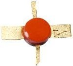
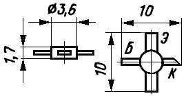

Транзистор КТ372
Транзисторы кремниевые эпитаксиально-планарные структуры n-p-n усилительные с нормированным коэффициентом шума на частоте 1 ГГц.
Предназначены для применения во входных и последующих каскадах усилителей сверхвысоких частот. Выпускаются в металлокерамическом корпусе с гибкими полосковыми выводами.
Тип прибора указывается на ярлыке, являющемся составной частью упаковки. На корпусе между базовым и эмиттерным выводами наносится условная маркировка цветными точками:
- КТ372А - две зеленые;
- КТ372Б - две черные;
- КТ372В - две белые.
Масса транзистора не более 0,2 г.
Тип корпуса: КТЮ-23-2.


Рис. 1 - Внешний вид, цоколевка и размеры транзистора КТ372
Таблица 1
| Тип | IК max, мА | UКЭR max (UКЭ0 max), В |
UКБ0 max, В | UЭБ0 max, В | РК max, мВт |
|---|---|---|---|---|---|
| КТ372А | 10 | 15 | 15 | 3 | 50 |
| КТ372Б | 10 | 15 | 15 | 3 | 50 |
| КТ372В | 10 | 15 | 15 | 3 | 50 |
tк - Постоянная времени цепи обратной связи на высокой частоте: не более 9 пс
Таблица 2
| Тип | |||||||||
|---|---|---|---|---|---|---|---|---|---|
| h21Э | IКБО, мкА | IЭБО, мкА | f гp, МГц | КШ, дБ | СК, пФ | СЭ, пФ | TП max, °С | Тmax, | |
| КТ372А | >10 | 0,5 | 20 | >2400 | 3,5 | 1 | 1,5 | 155 | -60…+125 |
| КТ372Б | >10 | 0,5 | 20 | >3000 | 5,5 | 1 | 1,5 | 155 | -60…+125 |
| КТ372В | >10 | 0,5 | 20 | >2400 | 3,5 | 1 | 1,5 | 155 | -60…+125 |